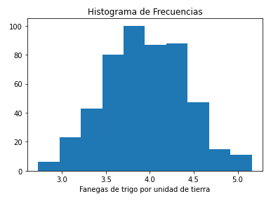
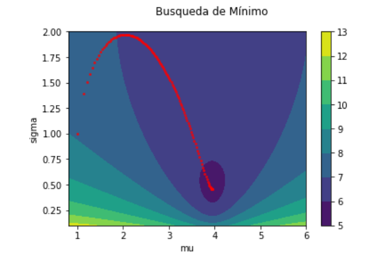

Aplicación Máxima Verosimilitud
Para la estimación de parámetros por el método de máxima verosimilitud, se desarrolló una serie de algoritmos que implementan métodos numéricos necesarios para resolver el problema.
Para ilustrar el funcionamiento de estos métodos numéricos, se utiliza una base de datos de rendimiento de trigo por unidad de tierra.
Esta base de datos es de un estudio históricamente relevante por Mercer and Hall en Rothamsted Experimental Station en Gran Bretaña en el año de 1910.
Esta estación experimental se fundó en 1834 con el objetivo de experimentar con diferentes cultivos y analizar su rendimiento contrastando el uso de distintos fertilizantes.
Histograma de Frecuencias

Log Similitud
def normal_loglikelihood(params,data):
mu = params[0]
sigma = params[1]
x = data
n=len(data)
loglikelihood=-(n/2)*np.log(2*np.pi)-(n/2)*
np.log(sigma**2)-(1/(2*sigma**2))*np.sum((x-mu)**2)
return -1*loglikelihood
Gradiente
def gradient_normal_loglike(params,data):
mu = params[0]
sigma = params[1]
x=data
n=len(data)
dmu= (1/(sigma**2))*np.sum(x-mu)
dsigma=-(n/2)*((2*sigma)/sigma**2)+(1/sigma**3)*np.sum((x-mu)**2)
return -1*np.array([dmu,dsigma])
Descenso en Gradiente
def gradient_descent(x,gradient,data,tol=.0001,maxiter=10000,step_size=.0001):
x_old=x+10
i=0
points=list()
while ((np.linalg.norm(x-x_old)>=tol)):
if i==1000:
break
points.append(x)
x_old=x
x=x-step_size*gradient(x,data)
i+=1
return x
Trayectoria de Descenso

Resultados
|
$\mu$ |
$\sigma$ |
| Solución por DG |
3.94832449 |
0.45782199 |
| Solución Analítica |
3.9486399 |
0.45782108 |
| Error Relativo |
-7.99e-05 |
1.97e-06 |